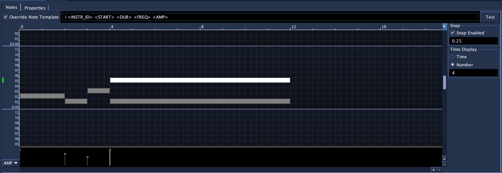
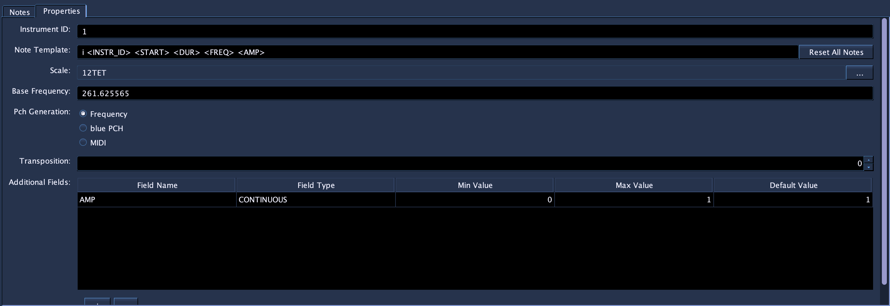
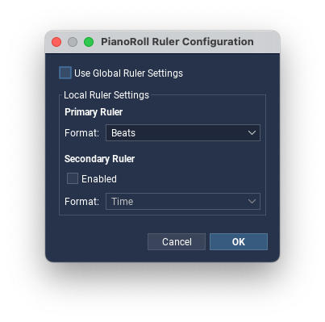
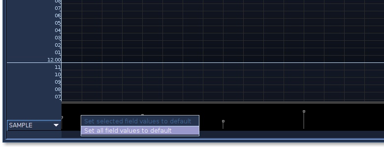

PianoRoll
Introduction
Accepts NoteProcessors: yes

The PianoRoll SoundObject is a graphical tool for quickly drawing in and editing notes. Blue’s PianoRoll is unique from those found in other DAWs in two ways. Firstly, as Csound’s note system is user-extensible (i.e., users may define the number of pfields for their instrument), Blue’s PianoRoll allows for customization for any number of pfields per note. Secondly, Blue’s PianoRoll is Microtonal and supports loading any Scala scale file and editing of notes adapts to that scale. (The PianoRoll is pre-set to use 12-TET tuning by default, which should cover most use cases out of the box.) The generated notes can output values as either frequency, Blue PCH notation (octave.scaleDegree) or MIDI note numbers.
General Usage
The general workflow for the PianoRoll is as follows:
- Create a PianoRoll Object
- Configure the PianoRoll for your instrument. This involves editing the instrument number, tuning, scale, pitch generation method, and adding any additional fields for notes. The PianoRoll has defaults that generate for frequency as p4 and amplitude in range 0.0-1.0 for p5.
- Draw in and edit notes. Edit fields for notes.
- Make copies of the configured PianoRoll to use as a template for new musical material.
Configuring Piano Roll Properties
PianoRoll Properties
The PianoRoll requires configuration before using. The properties page below shows the properties that should be configured before using the actual note drawing canvas.

- Instrument ID
- Instrument name or number to be used when replacing <INSTR_ID> in Note template strings.
- Note Template
- The default note template when inserting notes. Each note will use the default template for the PianoRoll unless the user has elected to have a specific note use its own template. Generally, you’ll want to create a template string that will match the instrument this PianoRoll will be used with.
- Scale
- The scale used with this PianoRoll. The PianoRoll defaults to a 12-TET scale, the “standard” scale in use in Western classical and popular music. Pressing the button labeled “…” will open a file browser for selecting Scala scale files to use in place of the default. After selecting a scale, the PianoRoll will adjust the note canvas for the number of scale degrees the newly selected scale contains.
- Base Frequency
- The base frequency of the scale for octave 8 and scale degree 0 (8.00). Defaults to C below A440.
- Pch Generation
-
Selects how the notes will generate their value to be used when replacing the <FREQ> tag value in a note template. The options are:
- Frequency
- The value of the note’s pitch expressed in terms of frequency in hertz. This value is calculated using the chosen Scale for the PianoRoll.
- Blue PCH
- Value of note expressed in Blue PCH, a format similar to Csound PCH but differs in that it does not allow fractional values. Values are generated as “octave.scaleDegree” i.e. “8.22” would be octave 8 and scale degree 22 in a scale that has 23 or more notes, or would wrap around as it does in Csound PCH. If the scale had 12 scale degrees, the “8.22” would be interpreted as “9.10”. Blue PCH is allowed as an option to be used with Blue PCH note processors and then to be used with the Tuning NoteProcessor.
- MIDI
- When this Pch Generation method is chosen, a MIDI note value (0-127, 60 = Middle-C) is used for <FREQ> and the chosen Scale will not be used. The display for the editor will automatically switch to show octaves and notes for standard MIDI scale values. Using MIDI note values is useful for instruments that expect MIDI note values such as the fluidsynth opcodes as well as midiout.
- Transposition
- Simple tool to transpose all notes within the PianoRoll by a given number of scale degrees.
- Additional Fields
- User-definable set of additional fields per note. Use the editor to add or remove fields, edit the field name, type (DISCRETE or CONTINUOUS, meaning it only permits whole numbers or allows for decimal numbers), a min and max value, as well as default value to use for new notes. The name of each field is used in the template string to replace the named template key with the value from the note. For example, if a field has a name of AMP, any instance of <AMP> in the template string will be replaced with the value from the AMP field from the parameter editor for that note.
Further information on Note Template Strings
The PianoRoll uses Note Template strings as a way to maintain flexibility and be able to handle the open-ended nature of Csound’s instruments. Since the user who builds the instrument designs what each pfield will mean (with the exception of p1, p2, and p3), the Note Template string should be made to match the instrument the user wants to use the PianoRoll with. When the PianoRoll generates Csound Score data, certain template strings (those enclosed in < and >) will be replaced by values unique to the note.
For example, the following Note Template string:
i<INSTR_ID> <START> <DUR> <FREQ> 0 1 1Will have the <INSTR_ID> replaced with the value set in the Piano Roll properties, <START> replaced the start time for the note, <DUR> replaced with the duration of the note, and <FREQ> replaced with either a frequency, PCH, or MIDI note number value, depending on how the Piano Roll is configured in its properties. The other values will pass through as part of the note.
Caution should be used when creating a Note Template string to make sure that there are enough spaces allowed between replacement strings. For example, the following:
i<INSTR_ID> <START> <DUR> <FREQ> <FREQ> 0 1 1would result in:
i1 0 2 440 440 0 1 1while the following:
i<INSTR_ID> <START> <DUR> <FREQ><FREQ> 0 1 1which does not have proper space between the two <FREQ> tags, results in:
i1 0 2 440440 0 1 1Time Options
The PianoRoll has a Ruler button for configuring how the timeline is displayed. This dialog is separate from the note and field editing controls and operates similarly to the ruler controls in the main Score Timeline.

- Snap Enabled
- Enables snapping behavior on the timeline. If snap is enabled, vertical guide lines are drawn at the current snap positions. Snapping is controlled independently from ruler display, so you can keep one ruler format visible while snapping to a different musical or time-based division. (Right-click the button to configure snap settings.)
- Use Global Ruler Settings
- When enabled, the PianoRoll inherits the Score Timeline’s current ruler settings.
- Local Primary Ruler
- When global ruler settings are disabled, you can choose the PianoRoll’s own primary ruler format. The available formats match the main Score Timeline, including beat-based measure formats, clock time, SMPTE, seconds, and samples.
- Local Secondary Ruler
- The PianoRoll can also show an optional secondary ruler. This is useful when, for example, you want to edit notes in bars and beats while keeping a time-based reference visible above the canvas.
For a broader explanation of the supported time formats and how Blue now separates stored time bases from ruler display, see Time System.
Editing Notes
To enter notes, hold down the shift key and press the left mouse button down on the canvas. A note will be entered where you pressed and will be set to resize as you move the mouse around. Insertion of the note ends when you release the mouse button.
Beyond drawing in notes, you may also select notes by clicking on them or drag and selecting notes by marquee. You may also press the shift key and click on notes to add to the currently selected notes. You can then drag the notes around by click a selected note and dragging. To resize a note, hover over the edge of one of the selected notes (the mouse cursor will change to a resize cursor), click, then drag to resize the selected notes.
You may also cut or copy and paste notes by:
- Select a set of notes
- Press ctrl-c (cmd-c on macOS) to copy the notes (or use ctrl-x or cmd-x to cut)
- Hold down ctrl and click with the mouse where you would like to paste the notes.
To remove a note or notes, select the notes, then press the delete key.
To override a note’s template, select a single note. After selecting a note, the text field for the note’s template text will be shown at the top of the Notes editor. Select “Override Note Template” and edit the note template for that individual note.
Field Values
Additional Fields configured in the PianoRoll appear as graphically editable values in the area below the PianoRoll Note Canvas. The dropdown on the left-hand side allows for switching what active field is being edited for notes. Newly-created notes will have field values set to the default value configured for each field definition. To change field values for notes, first select some notes then either:
- Use the handles in the field editor to drag up and down to edit the field values, or
- Press ctrl (or cmd on macOS), hover over one of the selected notes on the canvas, then click and drag up/down to edit the field values. (The mouse cursor should change into a horizontal resize cursor when hovering over a selected note with ctrl/cmd down.)
Note that when editing field definitions in the PianoRoll properties for PianoRolls with existing note data, the following occurs:
Renamed fields retain their data values
If min or max changes, values for fields will be clamped between the new min and max values.
If a field definition is removed, the field data for notes will be removed
If a new field is added, notes will all get a new field value set the default value for that field definition. Because the default value is 1.0 for a new field, all notes will receive that value. If you change the default in the field’s definition and want all of the pre-existing notes to use that value, you should:
- Go to the field editor view and use the field selector to choose the new fied.
- Right-click the field editor, then use the popup menu set either select notes or all notes to use the default value for that field.

Keyboard Shortcuts
| Shortcut | Description |
|---|---|
| alt-s | Toggle snap on/off |
| ctrl-a | Select all notes |
| ctrl-z | Undo |
| ctrl-shift-z | Redo |
Additional Information
See the example .blue file in the blue/examples/soundObjects folder.